Cerraduras para puertas corredizas con y sin llave, cerraduras push, cilíndricas, de baño y de dormitorio, y seguros para ventanas: caracol, botón, de resorte y con agarradera. Si no sabes cuál es la tuya, mándanos una foto y te ayudamos.
Algunos de nuestros productos
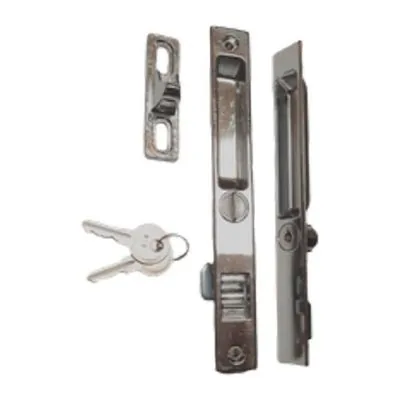
Cerradura puerta corrediza con llaveVer en el catálogo →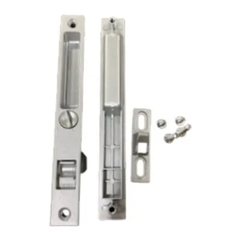
Cerradura puerta corrediza sin llaveVer en el catálogo →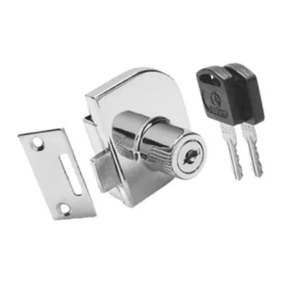
Cerradura para vidrioVer en el catálogo →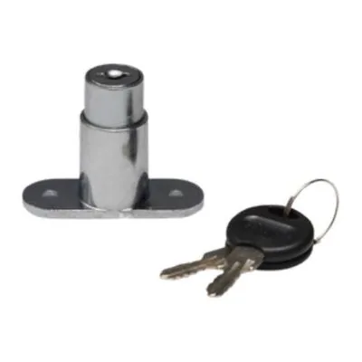
Cerradura pushVer en el catálogo →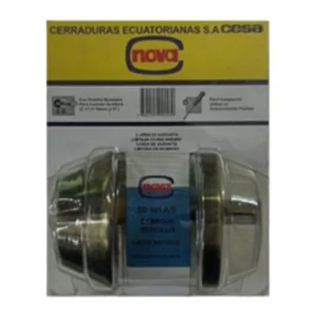
Cerradura cilíndrica llave/pestilloVer en el catálogo →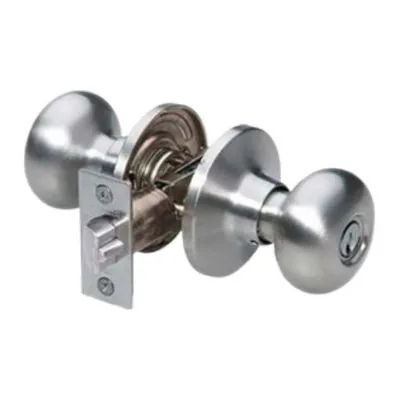
Cerradura de bañoVer en el catálogo →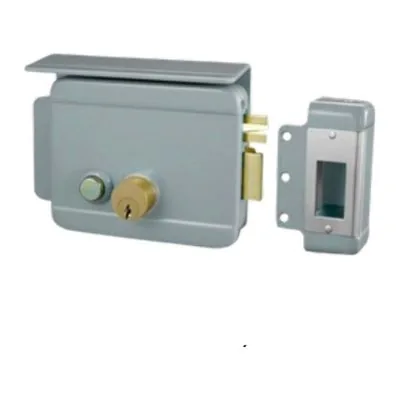
Cerradura eléctricaVer en el catálogo →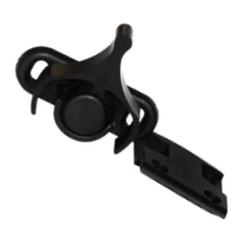
Seguro caracol plásticoVer en el catálogo →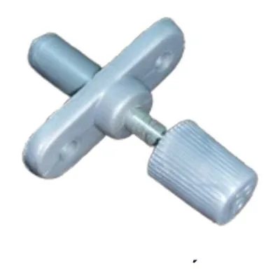
Seguro botón de aluminioVer en el catálogo →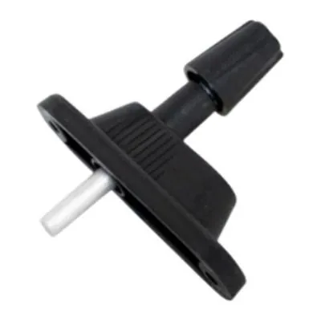
Seguro pushVer en el catálogo →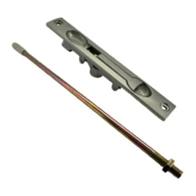
Picaporte embutidoVer en el catálogo →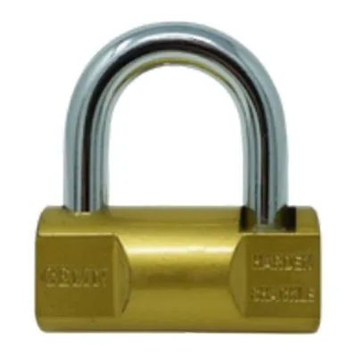
CandadoVer en el catálogo →Ver toda la sección «Cerraduras» en el catálogo
Por qué comprar en Alumol
- Desde 1982Más de 40 años distribuyendo en Guayaquil.
- Mejores preciosAl por mayor y al por menor.
- Asesoría y cotizacionesTe ayudamos a elegir la pieza correcta.
- Entrega en la ciudadSin costo en el perímetro urbano, en pedidos de mayor volumen.
Preguntas frecuentes
¿Venden por unidad?
Sí. Vendemos al por menor y al por mayor: desde una sola pieza para tu casa hasta pedidos grandes para talleres, negocios y constructoras.
¿Cómo sé cuál es la pieza que necesito?
Lo más seguro es traer la pieza vieja al local o mandarnos una foto por WhatsApp. Te asesoramos para elegir la correcta.
¿Por qué no aparecen los precios?
Los precios te los damos en la cotización, según lo que necesitas y la cantidad. Escríbenos por WhatsApp y te cotizamos.
¿Hacen entregas?
Sí. Entrega sin costo dentro del perímetro urbano de Guayaquil, en pedidos de mayor volumen y según disponibilidad del camión. También puedes retirar en el local.
¿Dónde están y en qué horario atienden?
En Lizardo García y Portete, Guayaquil. Lunes a viernes de 8:00 a 17:00; sábados y feriados de 8:00 a 14:00.
¿Necesitas cerraduras y seguros? Escríbenos con la foto o la medida y te cotizamos.
Cotizar por WhatsAppLlamar